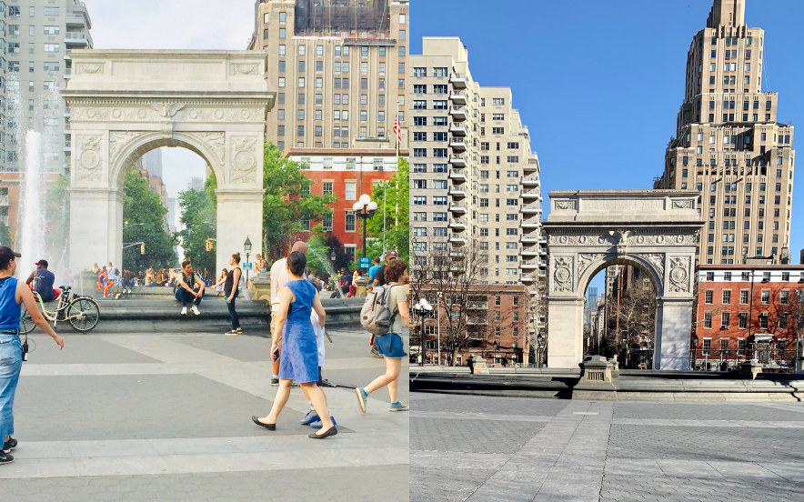

Book chapter abstract
Research on public space behavior often involves primary data collection including observations, surveys, and interviews. These methods can be costly and time consuming as well as divorced from the way people behave in physical space. We define big data as enormous streams of images, geographical coordinates, videos, and audio recordings that are usually generated in real time by sensors. Big data has the potential to support public space research.
The chapter discusses several challenges in public space research that may be addressed
by using big data approaches, including:
1) limited objectivity,
2) high cost in labor and time,
3) restricted scope (in geography and scale), and
4) lack of temporal fluidity and disassociation of behavior from precise geographical location.
Each challenge is discussed in the context of specific big data techniques that may help to overcome this limitation.
We present specific examples from existing big data research on public spaces, to demonstrate
the pros and cons of big data methods.
We discuss some of the challenges for big data research on public spaces, which include questions of privacy and the need for fairness, inclusivity, and quality control. Conclusions offer recommendations for the use of big data to inform public space design and planning. These include the use of web interface tools to enhance community engagement by crowdsourcing residents’ perceptions and experiences. Additionally, accurate measurements and large-scale analysis can support more equitable allocation of public spaces across neighborhoods and communities.
The chapter is in its final stages of editing and is planned to be published in the summer of 2019. We have been accepted to present the chapter in two urban design conferences in New Jersey and Greece in June 2019.